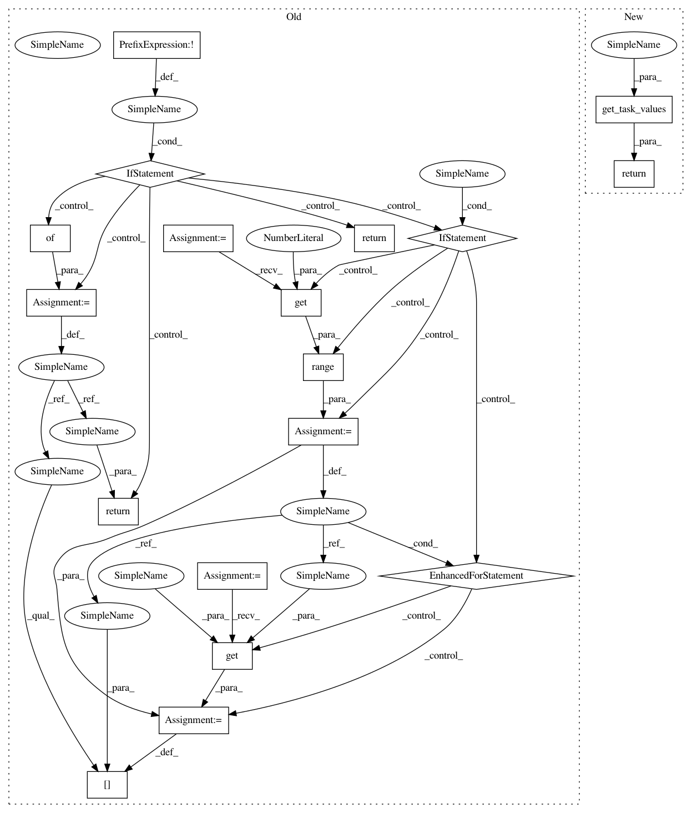

c392a78ec880d15a2f0f8aab48f1eb42f8766ad8,polyaxon_schemas/polyaxonfile/specification/utils.py,,get_task_job_node_selectors,#Any#Any#Any#Any#Any#,29
Before Change
node_selectors,
default_node_selector,
task_type):
if not is_distributed:
return None
result_node_selectors = {}
if default_node_selector:
for i in range(cluster.get(task_type, 0)):
result_node_selectors[i] = node_selectors.get(i, default_node_selector)
return result_node_selectors
def get_task_job_tolerations(cluster,
is_distributed,
After Change
node_selectors,
default_node_selector,
task_type):
return get_task_values(cluster=cluster,
is_distributed=is_distributed,
values=node_selectors,
default_value=default_node_selector,
task_type=task_type)
def get_task_job_tolerations(cluster,
is_distributed,
In pattern: SUPERPATTERN
Frequency: 4
Non-data size: 18
Instances
Project Name: polyaxon/polyaxon
Commit Name: c392a78ec880d15a2f0f8aab48f1eb42f8766ad8
Time: 2018-07-26
Author: mouradmourafiq@gmail.com
File Name: polyaxon_schemas/polyaxonfile/specification/utils.py
Class Name:
Method Name: get_task_job_node_selectors
Project Name: polyaxon/polyaxon
Commit Name: c392a78ec880d15a2f0f8aab48f1eb42f8766ad8
Time: 2018-07-26
Author: mouradmourafiq@gmail.com
File Name: polyaxon_schemas/polyaxonfile/specification/utils.py
Class Name:
Method Name: get_task_job_affinities
Project Name: polyaxon/polyaxon
Commit Name: c392a78ec880d15a2f0f8aab48f1eb42f8766ad8
Time: 2018-07-26
Author: mouradmourafiq@gmail.com
File Name: polyaxon_schemas/polyaxonfile/specification/utils.py
Class Name:
Method Name: get_task_job_tolerations
Project Name: polyaxon/polyaxon
Commit Name: c392a78ec880d15a2f0f8aab48f1eb42f8766ad8
Time: 2018-07-26
Author: mouradmourafiq@gmail.com
File Name: polyaxon_schemas/polyaxonfile/specification/utils.py
Class Name:
Method Name: get_task_job_resources